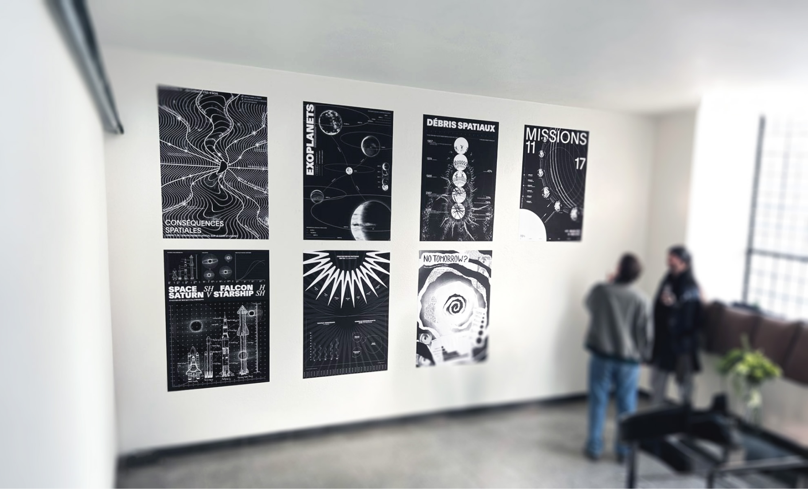
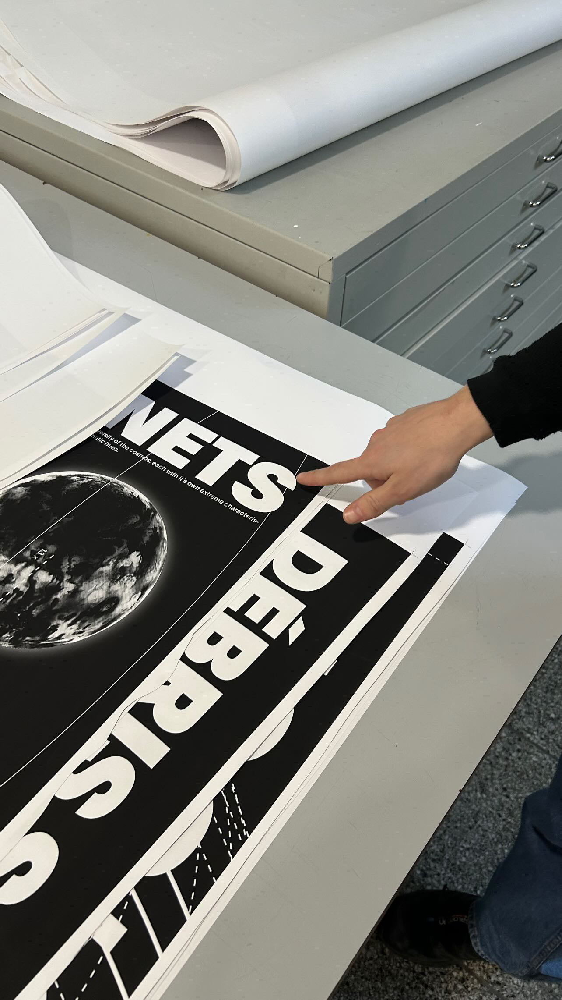
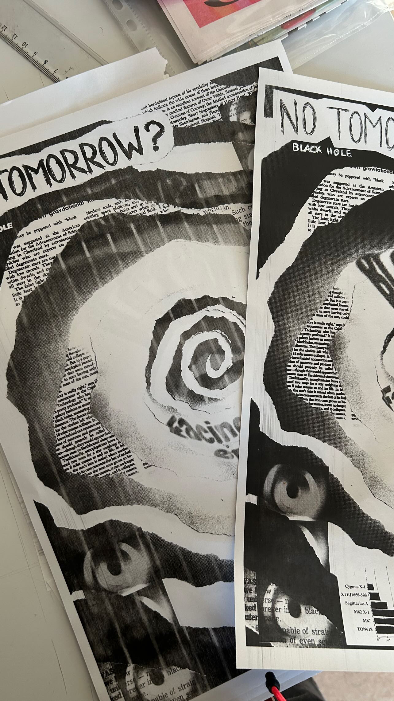

For a one-week workshop at Eracom in Lausanne, second-year students drew space-themed concepts from a hat to create public-facing infographic posters. Given complete creative freedom across mediums—including print, illustration, and video. They worked under just two strict rules: black-and-white palettes only, and Times New Roman typography. The workshop culminated in a cohesive series of 12 posters.

01 / THE POSTERS IN THE ROOM — The supplied workshop photograph. Seven black-and-white compositions, gathered into one wall-sized conversation.
ONE SUBJECT. MORE THAN ONE VISUAL LANGUAGE.
L’ESPACE
ERACOM WORKSHOP
POSTER / ILLUSTRATION / TYPE
What happens when you combine boundless cosmic themes with strict design constraints?
White marks on black grounds establish a family at a distance. Up close, the approaches diverge: fine curved lines, planetary circles, stacked figures, a radiating sun-like shape and an expressive spiral. The subject is held together without forcing every poster into the same composition.
Type is part of the image, not an afterthought. Condensed headings, vertical words and small blocks of information change the direction and density of each poster.

02 / LINE & ORBIT — Enlarged crop from the workshop photograph. Dense contour-like lines sit beside spare circular diagrams.

03 / FIGURE & TYPE — Enlarged crop from the same photograph. Illustration and headings alternate between a strong centre and a directional edge.
READING THE WALL / THREE RELATIONSHIPS
BLACK / WHITE
DENSE / OPEN / DIRECT
The line can be the subject.
Curves and circles do more than describe objects. Repetition and changes of spacing make the page feel like a field, an orbit or a force.
The heading changes the route.
Vertical lettering pulls the eye down; a horizontal title creates a threshold. Each poster offers a different order of reading.
The wall adds another scale.
As a group, the dark rectangles produce a clear rhythm against the light wall. The room allows similarities and disagreements to be read at once.
The experiment is part of the work.
The workshop is a place to compare approaches and let one idea rub against another. See the wider practice of research, making and system-building in the studio notebook.